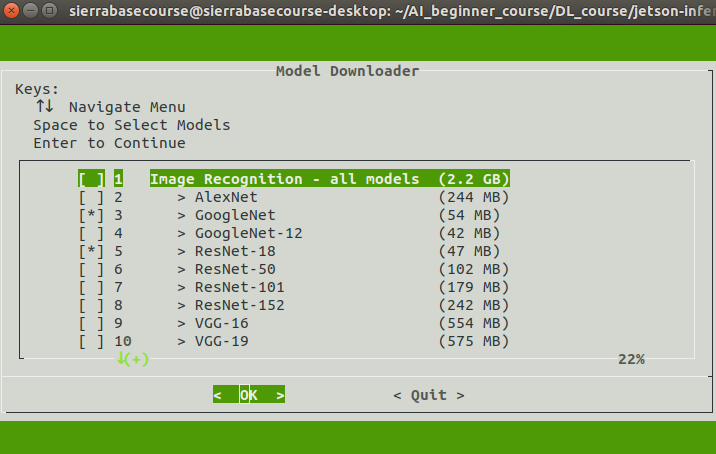
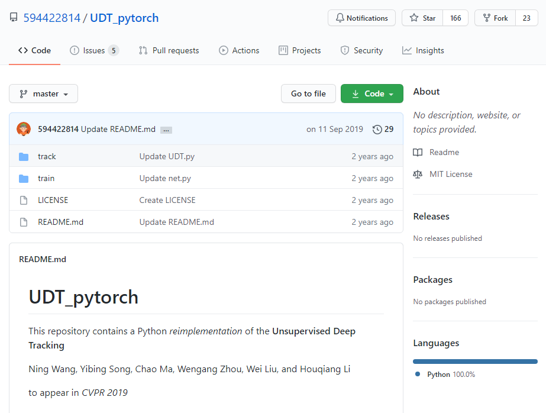
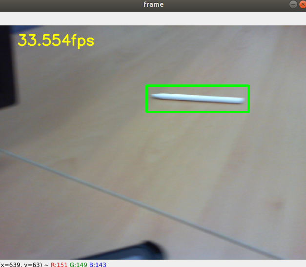

Introduction : Jetson-Inference¶
Jetson Inference is an opensource to introduce Deep Neural Network models, which can run in real-time and accurately. Especially, this repository uses NVIDIA TensorRT for efficiently deploying neural networks onto the embedded Jetson platform(e.g. nano, tx2, xaiver …), improving performance and power efficiency using graph optimizations, kernel fusion, and FP(Float Precision)16/INT8 precision. In more details, refer to this site(github).
Morerover, it supports to
training (Transfer Learning / Re-training)
Classification
Cat/Dog Dataset
PlantCLEF Dataset
Your Own Image Dataset
Object Detection
SSD-Mobilenet Network
Your Own Detection Dataset
Inference
Classification
Imagenet with Image / Video
your Own Image
Object Detection
Face
COCO containing dogs, bottles, etc.
Semantic Segmentation
Cityspcapes Dataset
DeepScene Dataset etc.
1. Build models¶
Note that you need to get ready for download opensource.
Go into
AI_beginner_course/DL_course/and download opensource.$ cd .. $ git clone https://github.com/dusty-nv/jetson-inference $ cd jetson-inference $ git submodule update --init
Set some settings for build.
$ mkdir build $ cd build $ cmake ../You might be confused because of the options of cmake. Note that the default models is
Image Recoginition
GoogleNet
ResNet-18
Object Detection
SSD-MobileNet-v2
PedNet
FaceNet
DetectNet-COCO-Dog
Semantic Segmentation
FCN-ResNet18-Cityspaces-512x256
FCN-ResNet18-DeepScene-576x320
FCN-ResNet18-MHP-512x320
FCN-ResNet18-Pascal-VOC-320x320
FCN-ResNet18-SUN-RGBD-512x400
Just press
enter(Recommend). If you want to download all, you can select menu, where contains “all models”, by pressingspacebar.
Moreover, in this case, I recommend to select to install
pytorchIt will take a lot of time( ~ 20 mins).
Let’s build and compile!
$ make -j$(nproc) $ sudo make install $ sudo ldconfig
2. Let’s Run some files¶
Let’s check the results of pretrained models.
Image Classification - ImageNet
Here it is a basic step :
$ cd aarch64/bin/
$ python3 imagenet.py /dev/video0
And here is a result,
Note that the default option of imagenet.py file is network=GoogLeNet
On the other hand, the location /dev/video0 indicates your input sources. That is, you used USB CAMERA
You can change other models. Then, let’s change the other model, ResNet-18!!
$ python3 imagenet.py --network=resnet-18 /dev/video0
There is a table shows jetson-inference repository supports.
| Network | CLI argument | NetworkType enum |
|---|---|---|
| AlexNet | alexnet |
ALEXNET |
| GoogleNet | googlenet |
GOOGLENET |
| GoogleNet-12 | googlenet-12 |
GOOGLENET_12 |
| ResNet-18 | resnet-18 |
RESNET_18 |
| ResNet-50 | resnet-50 |
RESNET_50 |
| ResNet-101 | resnet-101 |
RESNET_101 |
| ResNet-152 | resnet-152 |
RESNET_152 |
| VGG-16 | vgg-16 |
VGG-16 |
| VGG-19 | vgg-19 |
VGG-19 |
| Inception-v4 | inception-v4 |
INCEPTION_V4 |
You could see the various models before build makes. In details, please visit this github site.
Object Detection
Object Detection models show the bounded boxes we trained.
$ python3 detectnet.py /dev/video0
Then, the result will be,
In this case, we can check the default network is SSD-MobileNet-V2. and the below table is network model list. and COCO is the most used Image Datasets. There are many labelings (Person, chair, animals, … and so on) in COCO Datasets. For training them, we need much times and expensive devices. So we simply introduce object detection’s inference.
| Network | CLI argument | NetworkType enum | Object classes |
|---|---|---|---|
| SSD-Mobilenet-v1 | ssd-mobilenet-v1 |
SSD_MOBILENET_V1 |
91 (COCO classes) |
| SSD-Mobilenet-v2 | ssd-mobilenet-v2 |
SSD_MOBILENET_V2 |
91 (COCO classes) |
| SSD-Inception-v2 | ssd-inception-v2 |
SSD_INCEPTION_V2 |
91 (COCO classes) |
| DetectNet-COCO-Dog | coco-dog |
COCO_DOG |
dogs |
| DetectNet-COCO-Bottle | coco-bottle |
COCO_BOTTLE |
bottles |
| DetectNet-COCO-Chair | coco-chair |
COCO_CHAIR |
chairs |
| DetectNet-COCO-Airplane | coco-airplane |
COCO_AIRPLANE |
airplanes |
| ped-100 | pednet |
PEDNET |
pedestrians |
| multiped-500 | multiped |
PEDNET_MULTI |
pedestrians, luggage |
| facenet-120 | facenet |
FACENET |
faces |
You may choose other networks. Copy from the CLI argument of the table. This is an example to detect our face.
$ python3 detectnet.py --network=facenet /dev/video0
Semantic Segmentation.
Semantic Segmentation models can show the more accurate area to express objects.
The default model is FCN-ResNet18-Pascal-VOC-320x320
$ python3 segnet.py /dev/video0
| Dataset | Resolution | CLI Argument |
|---|---|---|
| Cityscapes | 512x256 | fcn-resnet18-cityscapes-512x256 |
| Cityscapes | 1024x512 | fcn-resnet18-cityscapes-1024x512 |
| Cityscapes | 2048x1024 | fcn-resnet18-cityscapes-2048x1024 |
| DeepScene | 576x320 | fcn-resnet18-deepscene-576x320 |
| DeepScene | 864x480 | fcn-resnet18-deepscene-864x480 |
| Multi-Human | 512x320 | fcn-resnet18-mhp-512x320 |
| Multi-Human | 640x360 | fcn-resnet18-mhp-512x320 |
| Pascal VOC | 320x320 | fcn-resnet18-voc-320x320 |
| Pascal VOC | 512x320 | fcn-resnet18-voc-512x320 |
| SUN RGB-D | 512x400 | fcn-resnet18-sun-512x400 |
| SUN RGB-D | 640x512 | fcn-resnet18-sun-640x512 |
the another installed network is FCN-ResNet18-DeepScene-576x320 Let’s try this.
$ python3 segnet.py --network=fcn-resnet18-deepscene-576x320 /dev/video0
Introduction : Object Tracking(UDT)¶
The Object Tracking Algorithm means the task to take the first initial set from Object Detection results, to create an unique ID for the firstly detected result respectly, and to track these obejcts by Video(Image Sqequence). A lot of Tracking algorithms are proposed. However, to inference still fast and accurate in Jetson nano, we need to get the much light models.

So, I introduce the Unsupervised Deep Tracking, UDT Algorithm(2019). From this model, we obtain the fact that FPS is 70, and AUC Score is 59.4%. It is very high score to compare other Supervised-based tracking methods.
Anyway, we can enjoy this tacking algorithms, by drag-and-drop a nd enter key. I modified this code from here. You can also find the summary from AI_beginner_course/DL_cousre/Object_Tracking/README.md file.
0. Let’s run UDT.py¶
This phase is very simple. So I recommend to expriment very various inputs.
Go into Object Tracking files.
$ cd ../../../../Object_Tracking/Or if you’re confused your path, then it is also a good way to start from home directory!!
# My_Project_Name is "SierrabaseLab" $ cd /home/{Your_Project_Name}/AI_beginner_course/DL_course/Object_Tracking/
You Remember only
UDT.pyThat is, just run :
$ python3 UDT.py
Then, the image would be captured. In this frame, you must
Drag-and-Drop
Press
enterkey
It is a process called Region Proposal
If you’ve completed, then tracking algorithms will be started.

In this course, I left two options whether you use USB WebCamera or Saved Video to input.
Usb Camera (Demo)
Use
--input_source /dev/video0, or--input_source 0Also, you can insert = :
input_source=/dev/video0, or--input_source=0$ python3 UDT.py $ python3 UDT.py --input_source=0 $ python3 UDT.py --input_source 0 $ python3 UDT.py --input_source=/dev/video0 $ python3 UDT.py --input_source /dev/video0
The above five lines are the same meaning!
Any Video Input
I processed some VOC 2016 Oepn Datasets. Especially, you can experiment
bag.aviandcar1.aviFor instance, this is the converted
bag.avifile.
Use
--input_source bag.avior--input_source car1.avi$ python3 UDT.py --input_source bag.avi $ python3 UDT.py --input_source car1.avi
Until now, you’ve seen the popular AI algorithms with Jetson nano. Congratulation!!